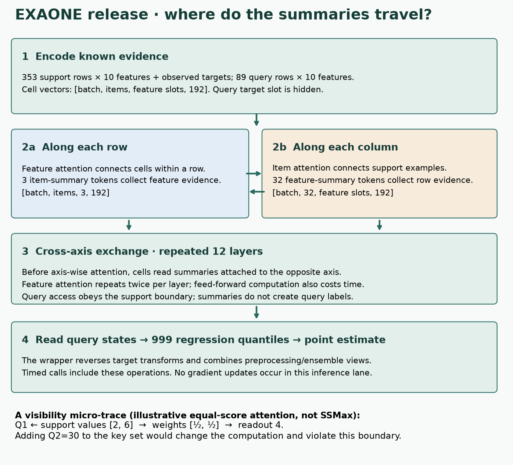
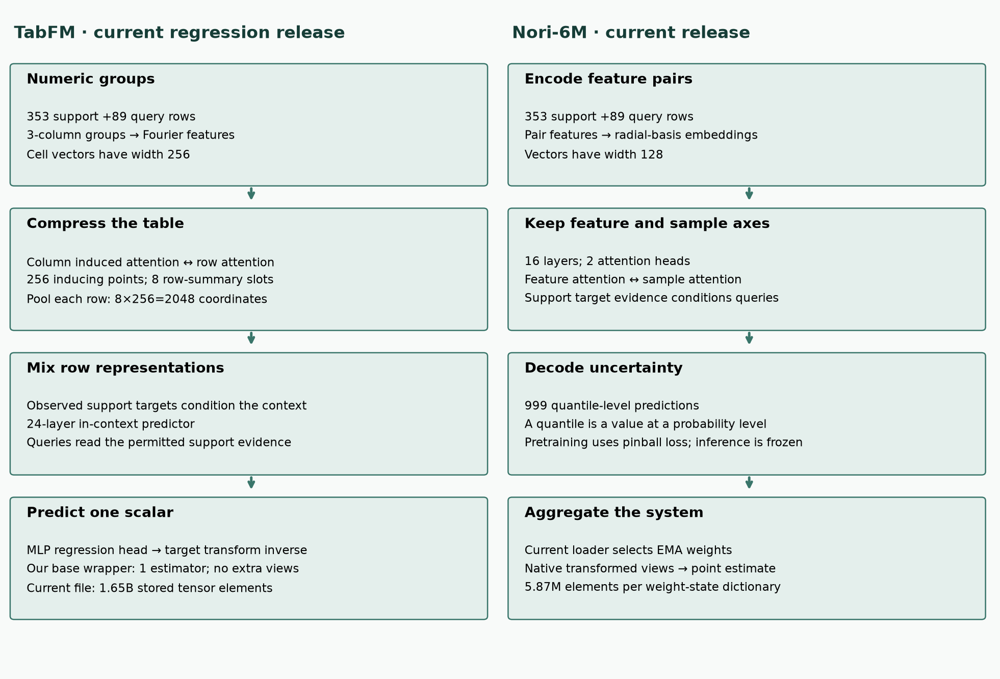
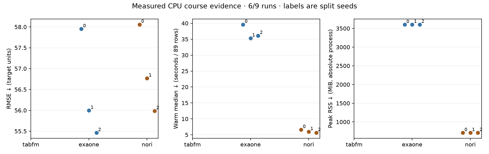

B09 · What does a prediction really cost?¶
Current cost frontier · TabFM, EXAONE and Nori · one skill: defend a latency–memory–quality comparison on identical prediction rows.
B08: structured objectives · Student lab · Executed solution · Field guide
Begin with the gap¶
B08 separated the errors a model learns to predict. It did not tell us what serving those predictions costs. A smaller checkpoint can require more preprocessing, more passes, or a larger support set. A fast warm call can hide expensive preparation.
This matters for our relational-learning mission: a learned relational model needs a credible single-table baseline. If the baseline receives less context or is timed differently, an apparent relational advantage may just be an evaluation artifact. B10 will ask how the model can use database relationships; today we establish how to compare an operating point.
Operating point means the entire prediction configuration: checkpoint, input rows, preprocessing, support size, ensemble, cache, hardware and precision. Latency is elapsed time for a declared unit of work. Peak memory is the largest observed memory footprint during a declared interval. Quality here is root mean squared error (RMSE), in the target's units; lower is better.
Retrieve before reading¶
Without notes: What changes during in-context learning? Which rows may supply target labels? Why did B08's extra objective fail to improve every seed? What would make a validation comparison leak test outcomes?
Prerequisite recap. A support set contains known features and targets. A query contains features whose target is withheld. An embedding turns a cell into a vector. Attention constructs weighted sums of other vectors. Frozen inference changes representations and context, but does not update learned weights with gradients. A wrapper may still fit scalers or ensemble weights.
1 · First define the request¶
Worked example. System A spends 6 seconds preparing support and 0.02 seconds per request. System B spends 1 second preparing support and 0.08 seconds per request. Both predict the same 100 rows per request at the same quality. Predict the winner before revealing the calculation.
For R repeated requests using the same prepared support, total time is T = load + preparation + R × prediction. Loading is omitted only in this illustrative example. If preparation cannot be reused, pay it again. The crossover solves 6 + 0.02R = 1 + 0.08R, or R ≈ 83.3. At one request B wins; at 100 cached requests A wins.
When does preparation pay off?
Illustrative fixed quality and hardware. Predict the crossover.
Cold start begins without a loaded model. Warm inference reuses a loaded model and any declared support cache. A download, model load, support fit, first call, and warm call are different intervals. Lazy initialization may move work from fit into the first predict. Report all intervals instead of relying on the method name.
Scope check. The slider uses invented times to isolate amortization. It is not a measurement of TabFM, EXAONE or Nori. The older benchmark-budget widget plots hyperparameter search, so it is not reused as an inference-timing chart.
2 · Model architecture: follow the information, then count the work¶
The EXAONE technical report §2 is the primary reading. Compare it with the pinned release implementation: a current runtime is not automatically the publication-era configuration.
CAST exchanges summaries across the two table axes
Feature attention mixes columns within a row; item attention mixes support examples within a column. CAST carries 3 item-summary tokens per row and 32 feature-summary tokens per feature, with cross-axis reads before axis-wise attention.
![Feature attention mixes columns within a row; item attention mixes support examples within a column. CAST carries 3 item-summary tokens per row and 32 feature-summary tokens per feature, with cross-axis reads before axis-wise attention. Encode each cell: Support targets are observed; query targets are hidden. Missingness also enters the encoder. Read the column memory: Each cell cross-attends to its 32 feature summaries and adds the result to its own state. Mix across features: Append 3 item summaries per row. Self-attend over cells plus summaries; repeat twice per layer. Read the row memory: Each cell reads its 3 item summaries through another residual cross-attention path. Mix across support rows: Support cells and feature summaries update together. Queries read them without changing them. Repeat, then predict: Repeat the CAST layer 12 times. The regression head emits 999 quantiles; the wrapper returns the prediction.](../assets/visual-details/b09-mobile.svg)
Predict: What extra route do the summaries create?
A cell reads summaries from the opposite axis before axis-wise attention, allowing repeated exchange between row and column context. Summary counts and the 192-wide, 12-layer, 6-head configuration describe the pinned release.
Answer: A cell reads summaries from the opposite axis before axis-wise attention, allowing repeated exchange between row and column context. Summary counts and the 192-wide, 12-layer, 6-head configuration describe the pinned release.

Previous overview and release settings


- Encode evidence. 353 support rows with targets;89 queries with hidden targets. Each cell becomes a 192-coordinate vector.
- Across columns. Three item-summary tokens gather features within each row.
- Across support rows. Thirty-two feature-summary tokens gather examples for each feature.
- Exchange across axes. Cells read opposite-axis summaries, then mix within an axis. Repeat 12 layers; feature attention twice per layer.
- Read queries. The head emits 999 quantiles, then the wrapper reverses target transforms and aggregates views. No gradient updates.
Equal-score access trace: Q1 reads support values2and6 → weights ½, ½ → readout 4. Forbidden Q2=30 cannot change this readout.
Two axes. Feature attention mixes columns within one row. Item attention mixes examples within one column. EXAONE's Cross-Axis Summary Transformer (CAST) also carries learned summary tokens. An item-summary token gathers evidence across features for one row. A feature-summary token gathers evidence across support rows for one feature. Cells read summaries from the opposite axis before axis-wise attention. Repeated exchange lets a cell use both kinds of context.
Current release identity. The runtime specifies width 192, 12 layers, six attention heads, three item-summary tokens and 32 feature-summary tokens. Feature attention repeats twice per layer. Regression decodes 999 quantiles—predicted values at ordered probability levels—and the wrapper converts them into a point prediction. These are release-code specifications, not proof that the paper's historical checkpoint is identical.
Why this changes cost. Storing P parameters in float32 requires about 4P bytes for weights alone. Intermediate cell states scale with rows × feature slots × width. Attention work depends on sequence lengths and repetition. Ensemble members repeat work. Caching may trade memory for less repeated computation. Therefore parameter count alone cannot determine either runtime or peak memory.
Visibility trace. Suppose support value states are 2 and 6, with equal attention scores. A query reading only those states receives (2+6)/2=4. A second query's value should not enter this support-only readout. This primitive illustrates an access boundary, not EXAONE's full SSMax attention normalization.
Change a forbidden value
Equal-score primitive. Support values [2,6]; Q1=10.
SSMax is the release's attention normalization. Its source scales attention scores using a stored per-head coefficient and the logarithm of context length, so its weighting rule is not the fixed-scale primitive below. Our small dot-product exercise deliberately teaches visibility separately. Query-independent attention also does not guarantee an entire wrapper is query-batch invariant: preprocessing that fits on unlabeled query features can introduce another dependency.
Other paths through the same task¶


Numeric cells → Fourier embeddings and feature groups → column-induced and row attention → row-summary pooling → in-context predictor → regression head.
The frozen predictor receives multiple engineered views. Plus adds ensemble/calibration work. Auto adds LLM-driven feature construction and selection. Count those costs too.
Feature pairs and numeric embeddings → alternating feature/sample attention → 999-quantile output → point estimate. Its wrapper also transforms and ensembles inputs.
TabFM report §§3–5 distinguishes base, + and Auto. The Nori model card describes a regression model and reports benchmark results; a model card is provider evidence, not independent replication. Our exact downloaded configurations and SHA256 hashes are in the source ledger. The pinned TabFM regression file contains 1,647,783,213 tensor elements, including any stored buffers, with width 256. The paper describes a400M checkpoint at width 128. These are different artifact identities. Nori stores both ordinary and exponential-moving-average weights; the release loader selects the latter. Do not copy a paper's parameter count onto different release weights.
Training vocabulary. Pinball loss penalizes under- and over-prediction differently for each quantile level. An exponential moving average (EMA) smooths parameter values over training steps; a release may store both raw and EMA weights. Selecting EMA weights is a checkpoint choice, not new training.
Numeric encodings. Fourier features map a scalar to sinusoidal coordinates at several frequencies. Radial-basis features respond to its distance from centers. Inducing points are learned summary vectors that mediate attention across many rows. These encodings alter intermediate work even when the original input table is identical.
Wrapper vocabulary. An ensemble combines several predictions. SVD (singular value decomposition) constructs projected feature directions. NNLS (non-negative least squares) fits ensemble weights constrained to be nonnegative. Calibration adjusts a prediction distribution using held-out evidence. None of these operations is free merely because the backbone weights are frozen.
3 · Freeze a comparison before seeing scores¶
B09-MATCHED-COST uses scikit-learn's real diabetes regression data: 442 rows and ten features. We request raw features (scaled=False) so a dataset-wide scaling transform is not silently applied before splitting. Each seed 0, 1 and 2 creates an 80/20 split: 353 support rows and 89 query rows. All three models receive exactly those rows, in the same order, and all ten original features.
On a narrow screen, the architecture becomes a readable sequence with the same shapes and information path.
Held fixed: dataset bytes, split identities, full support, query order, target metric, CPU, float32 model compute and four Torch threads. Varied: the checkpoint and its declared prediction system. Native preprocessing is retained and documented; this is a system comparison, not an isolated architectural ablation. No test-score tuning is allowed.
TabFM base uses one estimator, no cross/SVD features, no NNLS, and no support cache. EXAONE and Nori use the selected release wrapper settings; their ensembles and transforms must be counted. EXAONE has eight estimators and a separate SVD-augmented ensemble. Its NNLS weighting requires at least 2000 internal validation rows; 353 support rows trigger the declared uniform-weight fallback. This automatic source behavior is recorded, not an author-selected speedup. Nori retains eight native pipelines and its default internal predictor seed 0 across all outer splits. Nori's release preprocessing includes unlabeled-query distribution information. That is transductive feature access, not target-label access, and prevents an equal-preprocessing causal claim.
Each model/seed runs in a fresh process. We time loading after download, fit, first prediction, two warmups and ten warm predictions. Warm median and 90th percentile summarize ten repeated calls, not ten independent datasets. Absolute peak resident memory includes the Python runtime and native allocations; it is not tensor-only or incremental model memory. CPU measurements do not yield GPU memory estimates.
RMSE calculation. For n queries, subtract the true target from each prediction, square, average, then take the square root: RMSE = √(Σ(prediction − target)²/n). For errors [0,2], RMSE=√2≈1.414. Always align by query identity first. A shuffled prediction file can otherwise look valid while scoring the wrong rows.
4 · Read the measured evidence¶
Before opening the table, predict which interval will dominate. Would your prediction change for one request versus a service handling 100 requests?
Course status: INCOMPLETE; 6/9 model–seed runs completed.
| Model | Seed | RMSE ↓ | Load s | Fit s | First call s | Warm median s | Peak RSS MiB |
|---|---|---|---|---|---|---|---|
| tabfm | 0 | INCOMPLETE_RESOURCE_GATE | — | — | — | — | — |
| tabfm | 1 | INCOMPLETE_RESOURCE_GATE | — | — | — | — | — |
| tabfm | 2 | INCOMPLETE_RESOURCE_GATE | — | — | — | — | — |
| exaone | 0 | 57.952 | 0.413 | 0.011 | 30.724 | 39.619 | 3599.941 |
| exaone | 1 | 55.997 | 0.592 | 0.002 | 32.166 | 35.299 | 3604.105 |
| exaone | 2 | 55.462 | 0.348 | 0.001 | 33.319 | 36.120 | 3605.309 |
| nori | 0 | 58.058 | 1.538 | 0.005 | 5.903 | 6.616 | 710.551 |
| nori | 1 | 56.767 | 1.433 | 0.001 | 6.316 | 5.949 | 711.105 |
| nori | 2 | 55.988 | 1.274 | 0.000 | 5.970 | 5.646 | 710.520 |
Times are seconds per 89 query rows, not per 1,000. Warm = median of ten timed calls after first call and two warmups. Process peak RSS includes all stages. Downloads are excluded from the load column and charged to preparation. The first saved prediction array is scored; timed repetitions measure repeatability separately.
exaone: RMSE 56.470 ± 1.311, mean ± sample SD over three splits. nori: RMSE 56.938 ± 1.046, mean ± sample SD over three splits.
Incomplete arms: tabfm/0, tabfm/1, tabfm/2. Consult the attempt log and budget ledger; missing results are not zero-cost or low-error points. TabFM stopped at a conservative resource preflight: its unmodified-loader memory allowance exceeds available RAM. No measured out-of-memory failure is claimed.
Paired Nori minus EXAONE RMSE by split: +0.106, +0.770, +0.526. Negative favors Nori. These are paired dataset splits, not independent datasets. The missing TabFM arm prevents a complete three-model frontier. Support-mean RMSE by split: 71.657, 73.260, 74.795. This baseline uses only support targets.


A Pareto frontier contains operating points that no other point improves on every reported axis while improving strictly on at least one. For costs (latency, memory, error), smaller is better on every axis. Equal points do not dominate one another. A model can stay on the frontier by trading memory for accuracy.
Worked example. A=(1 second, 2 GiB, error 4), B=(2 seconds, 3 GiB, error 5), C=(2 seconds, 1 GiB, error 4). A dominates B; neither A nor C dominates the other. Calculate this in the notebook. Do not collapse the three axes into a winner without stating the user's constraints.
Scope check. Three overlapping splits of one dataset do not establish a model-family ranking or generalization across datasets. Across-seed sample standard deviation is descriptive, not a confidence interval. Missing arms must remain visible; a partial matrix cannot support a complete three-model frontier.
5 · Full reproduction has an exact target¶
The published target is EXAONE 2608.25774v1 Figure 3(b): regression accuracy–latency frontier. Its baselines use released TabArena timings and a broader comparison pool. Elo is a relative rating derived from comparisons against that pool, not an absolute regression error.
INCOMPLETE_SOURCE_PROTOCOL. Unresolved: publication-era checkpoint/code mapping for every plotted variant; complete original outer-fold query/support identities and preprocessing; original measured hardware, precision, batching, warmup and caching per method; original TabArena baseline timing records and complete Elo comparison pool; regression-only timing aggregation matching Figure 3 rather than overall leaderboard cost.
The course's Nori-6M is also distinct from the Nori-30M comparator in the current EXAONE release table. CPU timing is distinct from published accelerator timing. Equal-looking decimal scores cannot repair those protocol differences. The operator below reports the missing contracts and refuses to substitute diabetes for the historical suite:
.venv/bin/python labs/_reproduce_b09.py
.venv/bin/python labs/_reproduce_b09.py --execute
The second command intentionally stops while historical inputs are unresolved. This is an executable audit gate, not a completed full-figure reproducer. Full pretraining, TabFM+/Auto execution, the full benchmark, and deployment remain NOT_RUN. See the complete reproduction ledger.
Access inventory. Seldon is a provider report; NEXUS is an official product page. They belong in B24's access and exclusion inventory. Neither is an independently measured arm here. Product availability, licenses, inference costs and historical benchmark identity are separate questions. No paid proprietary access is used.
6 · Implement, check, defend¶
Open the student notebook. It includes the portable architecture, source-visible inference code, three live tasks, immediate checks, and author-reference evidence. Implement identity-safe RMSE, Pareto dominance, and support-only attention. The checks deliberately permute keys, inject a duplicate, and change a forbidden query value.
EXIT: report which arms completed; identify one cost omitted by a warm-only comparison; defend whether the evidence supports a frontier; and name the exact missing condition for reproducing Figure 3. Passing author tests does not complete this defense.
Return after 1, 7 and 30 days to reconstruct the cost equation and the visibility trace without notes. Ask your tutor follow-up questions whenever a timing boundary, tensor path or evidence label is unclear. Learner status: PENDING_WRITTEN_DEFENSE.